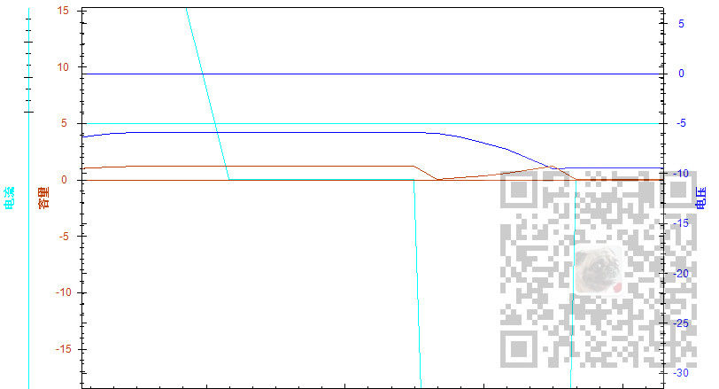
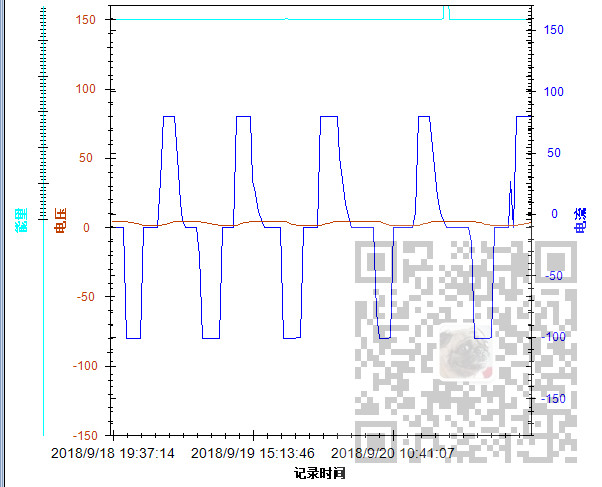

Winforn中设置ZedGraph曲线图的属性、坐标轴属性、刻度属性：
https://blog.csdn.net/BADAO_LIUMANG_QIZHI/article/details/100112573
Winform中实现ZedGraph的多条Y轴(附源码下载)：
https://blog.csdn.net/BADAO_LIUMANG_QIZHI/article/details/100132245
在上面实现显示多条自定义Y轴的效果上，发现每增加一条Y轴就会在曲线图上增加一条y=0的曲线图。

怎样在新增YAxis时不显示y=0这条曲线。
注：
博客主页：
https://blog.csdn.net/badao_liumang_qizhi
关注公众号
霸道的程序猿
获取编程相关电子书、教程推送与免费下载。
在生成YAxis以及Y2AXis时设置其IsZeroLine属性为false。
mypane.YAxis.MajorGrid.IsZeroLine = false; mypane.Y2Axis.MajorGrid.IsZeroLine = false;如果说设置了之后不起作用，看一下有没有设置这条代码：
myPane.YAxis.MajorGrid.IsVisible = false;其默认值是true，将其删掉或者注释掉，否则不起作用。
